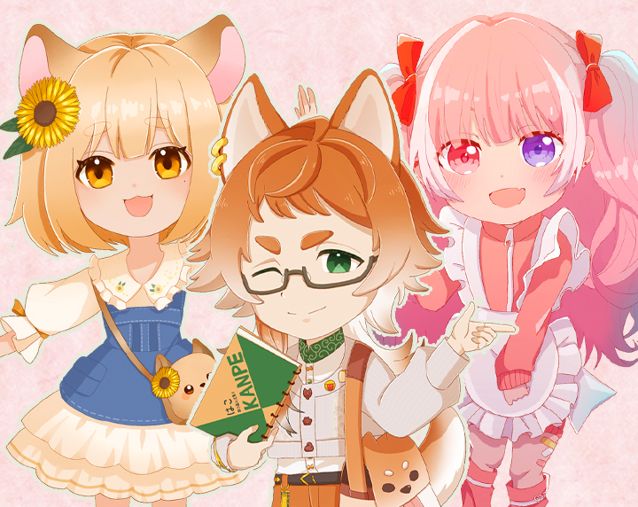
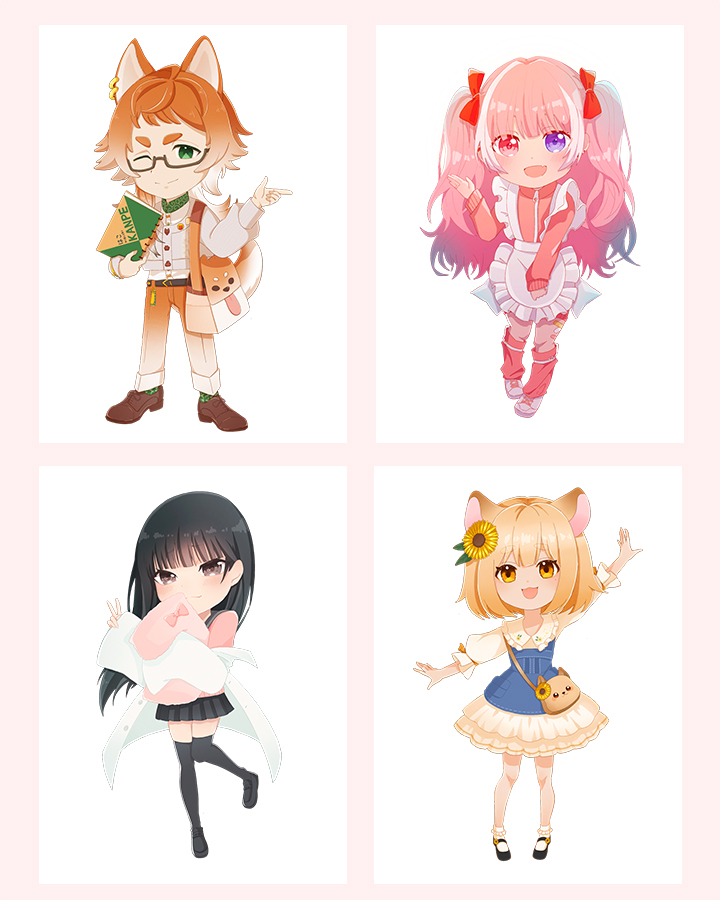
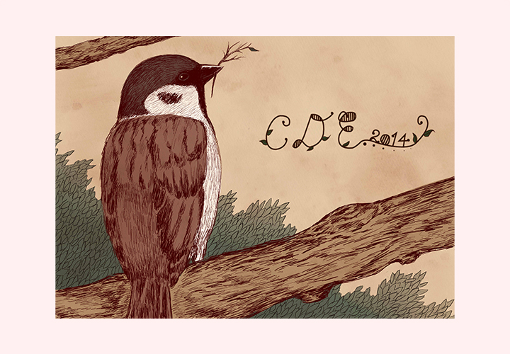
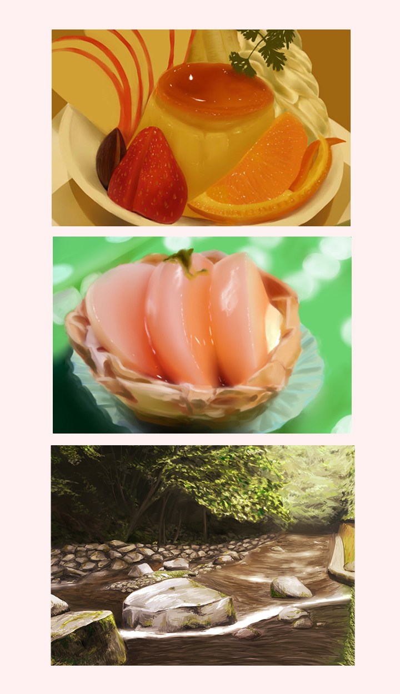
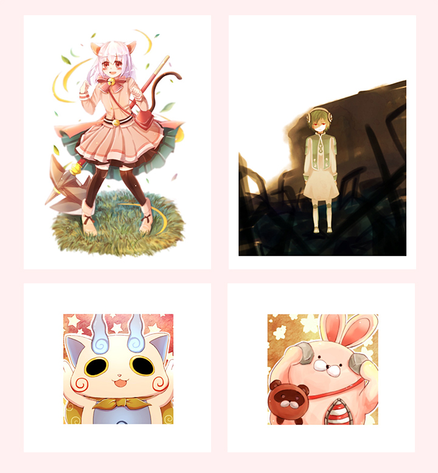

SDイラストを中心に、VTuberや個人のお客様からのご依頼によるイラスト制作を行っています。
ご依頼いただいたキャラクターの特徴や世界観を大切にしながら、一人ひとりのご要望に合わせたイラスト制作を心掛けています。
また、自主制作では風景画や食べ物、版権イラストなど幅広いジャンルを制作し、表現力や画力の向上に取り組んでいます。
使用ツール
SAI2
Procreate
CLIP STUDIO PAINT
担当
・SDイラスト制作（VTuber・個人のお客様からのご依頼）
自主制作・課題制作
・グループ展DMデザイン（専門学校課題）
・風景画
・食べ物イラスト
・版権イラスト
制作の目的
キャラクターの魅力や世界観を分かりやすく表現し、ご依頼いただいたお客様のイメージに沿ったイラストを制作することを目的としています。
また、自主制作ではさまざまなジャンルに挑戦し、表現力や描画力の向上に取り組んでいます。
ターゲット
VTuberや個人のお客様からのイラスト制作依頼を中心に、用途やご要望に合わせたイラスト制作を行っています。
イラスト制作について
SDイラストでは、ご依頼いただいたお客様のキャラクターの特徴や世界観を大切にし、親しみやすく魅力が伝わるデフォルメ表現を心掛けています。
自主制作では、風景画・食べ物・版権イラストなど幅広いジャンルを制作し、構図や色彩、質感表現などの技術向上に取り組んでいます。
また、専門学校の課題ではグループ展のDMデザインを制作し、作品の雰囲気や世界観が伝わるビジュアルやレイアウトを意識してデザインしました。
【SDイラスト（VTuber・個人のお客様からのご依頼）】

【グループ展DMデザイン（専門学校課題）】

【自主制作（風景画・食べ物・版権イラスト）】

